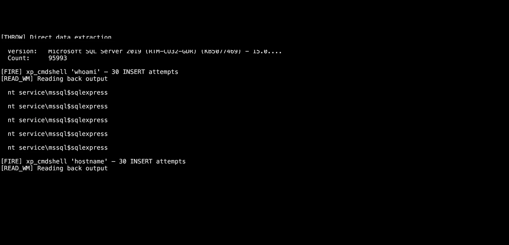
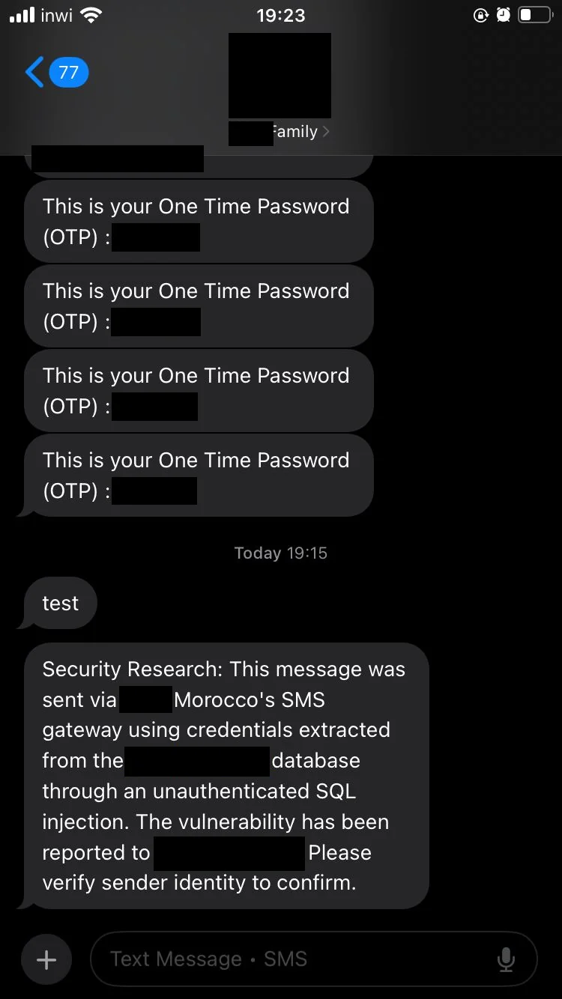
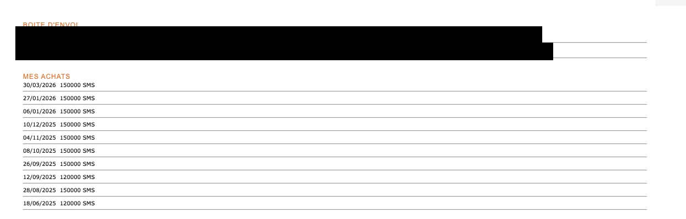
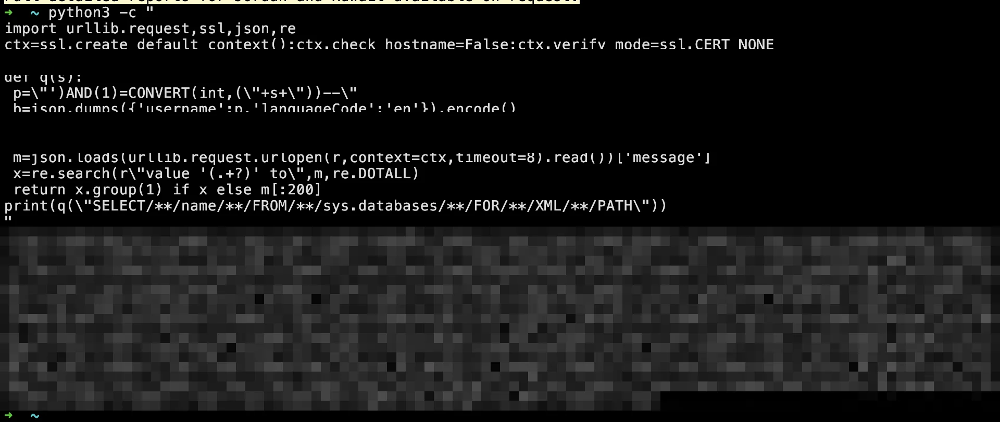

Security Research — Redacted Case File — High (7.5)
Flat-Pack Security
How a forgot-password form, one apostrophe, and a database that answered back turned into unauthenticated remote code execution at a furniture retailer — in three countries — mostly by accident. A comedy in eleven acts.
The short version
- A loyalty-card API at a furniture retailer had a forgot-password endpoint that concatenated input straight into SQL
- No authentication. No WAF. No rate limiting. The database user was
sa. Yes, thatsa - Boolean-blind confirmation → error-based extraction →
xp_cmdshell→ OS command execution - ~96,000 customer records in one market; the same bug then found in two more countries
- The server died mid-engagement, which made triage… philosophical
- Fixed, retested, hardened. Bounty eventually granted — 71 days after resolution
- All identifiers removed; the retailer shall remain nameless and, presumably, flat-packed
01The form that trusted everyone
Every good intrusion starts with the most innocent feature on the site. Not the login. Not the payments. The forgot password form — the page nobody thinks about, guarded by nobody, maintained by someone who left in 2021.
This one belonged to a furniture retailer's loyalty-card program. You typed your card number, and if it existed, the API sent an OTP to the registered phone. Simple. Friendly. Trusting.
It trusted me immediately. No authentication to reach it. No WAF in front of it. No rate limiting on it. The only security control I could identify was, as far as I can tell, optimism.
The card numbers were sequential. Thirteen digits, in order, like library indexes for humans. Keep that detail in your pocket — it comes back in act eight.
02One apostrophe
You know the ritual. You send an apostrophe and see if the server flinches. The trick here was figuring out how it flinches, because the response was always JSON with a polite status field.
So I ran a boolean-blind differential — same request, two conditions:
{"userName":"XXXXXXXX0643' AND '1'='1"} → status: true
{"userName":"XXXXXXXX0643' AND '1'='2"} → status: falseThe endpoint had essentially become a SQL oracle that graded my homework over HTTP. Correct query: the server happily fires an OTP SMS to a stranger's phone. Wrong query: "Invalid Mobile number."
Which means every boolean test I ran texted a real customer a password reset code. I would like to formally apologize to whoever owns that number. Your government owes you an SMS.
03The database snitches on itself
Boolean blind is slow. One bit per request is a hobby; I wanted throughput. Then I remembered SQL Server's most underrated feature: THROW.
You can put a query result into a variable and throw it as the error message — and this API, being the chatty type, reflected error messages straight into the JSON response:
{"userName":"'; DECLARE @v NVARCHAR(4000)=
(SELECT TOP 1 name FROM sys.databases); THROW 50000,@v,1; --"}Response: {"message":"MainFamilyCardDb_Prod"}
I didn't exfiltrate data. The server volunteered it. Enthusiastically. One request per fact, full sentences, error-message delivery — the database equivalent of a suspect confessing because nobody told him he could stay quiet.
In a handful of requests it told me: eight databases lived on that box, production and staging together, plus the background-job database, the failed-sync database, and the system databases. And in the main one, thirty-one tables — including Customers with 95,994 rows.
What was in Customers? Name, birth date, national civil ID, address, phone, email, income bracket, number of children. And the passwords.
Base64-encoded.
Which is a cipher in the same way a paper bag is a safe. I decoded one — the admin account — and the plaintext contained the company's own name. The strongest obfuscation on the premises was the hope that nobody would try base64 -d.
04sa, obviously
The connection was running as sa. Sysadmin. Every server role. The database wasn't just open — it was governed by the user account equivalent of a skeleton key taped to the door.
Which meant the classic finisher was available: enable xp_cmdshell via stacked queries.
'; EXEC sp_configure 'show advanced options', 1; RECONFIGURE;
EXEC sp_configure 'xp_cmdshell', 1; RECONFIGURE; --One wrinkle: connection pooling meant my stacked queries landed on random connections and often died mid-ritual. So the write step became a spray — fire the same INSERT thirty times, let one or two survive:
Then read it back with a single THROW, which always worked, because reading is apparently a protected right on this server while writing is an extreme sport.
05whoami
Command execution. As the SQL Server service account, on a Windows box, domain-joined, sitting on a hypervisor, in an internal /24 with a dozen neighbors including — the inventory said — domain controllers.
At this point the impact section of the report wrote itself. I just held the pen.
Evidence, redacted
Every identifying domain, host, account, phone number, OTP, route, credential, and customer detail has been removed. The screenshots below are the original evidence otherwise.

THROW → xp_cmdshell → whoami. Target identifiers and the terminal footer are removed.

06The server dies
Here is where the engagement went from security research to situation comedy.
While scoping further, the web service stopped responding. Port 443: nothing. But ICMP still answered — the machine was alive; the service was gone. The diagnosis: SQL Server Express — free edition, famously capped at ~1.4 GB of memory — had met my enumeration queries and chosen death. A single unauthenticated request could exhaust it. Unintentional denial of service, achieved by accident, through the same front door.
Two days later, the triage analyst on the platform messaged me:
"The request never gives a response for me. Is this still reproducible?"
My brother in cyber. The server is down. That is the reproduction. Your evidence that the vulnerability exists is that the vulnerability has eaten the service. I wrote back, professionally, explaining that the outage itself was a finding — and please escalate, because to everyone involved, the sound of a production database quietly asphyxiating was apparently indistinguishable from a slow Tuesday.
I also tried to reach the retailer's tech team through professional networking sites. Nothing. The outage continued, unacknowledged, for days. Somewhere out there was a furniture company whose loyalty app was down and whose monitoring solution was, I can only assume, a decorative plant.
07It's contagious
While waiting for the corpse to be revived, I checked something. This retailer operates the same loyalty platform in multiple countries. Same codebase, deployed per market.
So I looked at a second country. Their instance sat behind a cloud WAF — a real one, with rules. But the WAF protected the domain, and the origin server behind it accepted requests directly if you knew its IP. No origin access control at all.
The bouncer was strict. The back door was a revolving one.
That instance had a WAF-filtered input, so spaces got eaten — and SQL Server, ever helpful, accepts /**/ as whitespace:
{"username":"')AND(1)=CONVERT(int,(SELECT/**/name/**/FROM/**/sys.databases/**/FOR/**/XML/**/PATH))--"}One request. Twenty-nine databases, in one error message, gift-wrapped. Also running as sa, because consistency is a virtue.

Third country: same. Two vulnerable endpoints, seventeen databases, WAF bypassed the same way. Grand total across markets: north of half a million customer records behind one apostrophe.
I want to be clear that finding the same critical bug three times in a row is not skill. It's the security equivalent of checking every drawer in the kitchen because the first one was full of cash.
08The fix, the re-fix, and the re-re-fix
To their credit — and they deserve it — the vendor's team engaged fast, across all three markets at once, and patched the injection. Then I retested. Reader, the injection was gone.
The forgot-password endpoint, however, had developed a new personality. POST a valid card number now, and it returned the entire customer profile: name, civil ID, income bracket, children, address — unauthenticated. And remember those sequential card numbers from act one? I tested nine adjacent numbers. Eight returned complete profiles. The database could be enumerated without any injection at all — just a for-loop and patience. Each request also triggered a real OTP SMS to a real customer, so a full sweep would have texted ~96,000 people a password reset they didn't ask for.
Other highlights from the post-patch tour:
| Finding | Status at retest |
|---|---|
| UAT API on the production domain | Live, with full stack traces including developer folder paths |
/info endpoint | Disclosing the full controller map and DB connection pattern |
| Source maps in prod bundles | Whole React app browsable, config in cleartext |
| CORS | * — the shrug emoji of HTTP headers |
| SMS gateway creds in a config table | Present; sender name unrestricted; endpoint over plain HTTP |
That SMS gateway one deserves a sentence: anyone with those credentials could text any customer as the brand, because the sender name field accepted anything. Phishing pre-installed.
The team fixed all of it. Every round. I'd file it, they'd patch it, I'd verify. After the final sweep I told them the deployment was production-grade and hardened past the generic pentester bar, which was true, and which remains the politest thing I have ever said about a CORS header that used to be an asterisk.
09The severity rollercoaster
Meanwhile, the platform side of the story was doing its own thing.
The report went in as Critical 9.8 — unauth SQLi to RCE to half a million records tends to read that way. First committee touch: Medium. No explanation. Just the number, dropping five floors like an elevator with a personality disorder.
I asked why. The answer, in full, was a link to the CVSS calculator with a vector that scored 7.5. Not a sentence before it. Not a sentence after it. Just mathematics, deployed like a smoke bomb.
For the record: the vector assumed no RCE and no integrity impact, on a chain where I had executed OS commands as a sysadmin service account. But I accepted it without complaint and kept helping, because the math was technically load-bearing and the vendor team was genuinely fixing things. You pick your battles. This one I filed under "losses, educational."
10A yes, a no, or a date
The report was marked resolved on April 20. The program's policy mentioned rewards for high/critical findings, and a committee would review it. Monthly, they said.
Day 43: still waiting. Day 65: still waiting, and I said so, ending with the sentence I remain proudest of in this entire engagement:
"A yes, a no, or a date. That's all I'm asking."
On day 71, a notification arrived. "Congratulations! A reward has been granted." No amount. No explanation. Just the door opening a crack, a hand extending an envelope, and the door closing again.
Which is how security research actually works: weeks of silence, one dramatic table flip from a database, a severity that travels by elevator, and then — 71 days late — a single word that makes the whole thing worth it.
11What I keep
The technical lessons are the standard liturgy, and they're true, so sing along: parameterize your queries. Least-privilege your database users. Never run staging and production on the same box. Never base64 a password. Put the WAF's origin behind access control. Rate-limit the form that texts strangers.
The other lesson is less standard: the funniest vulnerabilities aren't the exotic ones. They're the ones where every individual decision was sort of reasonable and the assembled result is a customer loyalty program that answers your SQL questions by text message. Flat-pack furniture comes with an Allen key and fourteen steps. This came with no tools and one step, and somewhere in the middle of assembly the whole thing gained sentience and started telling me its admin password.
Flat-Pack Security. Some assembly required. Batteries — apparently — not included.